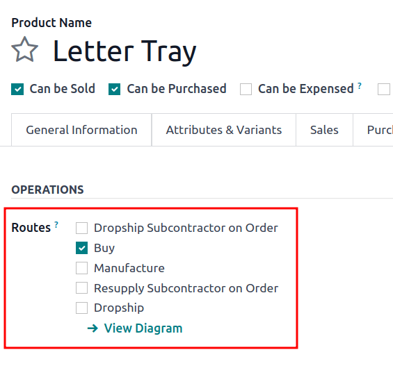
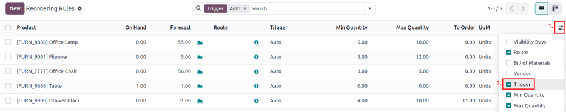
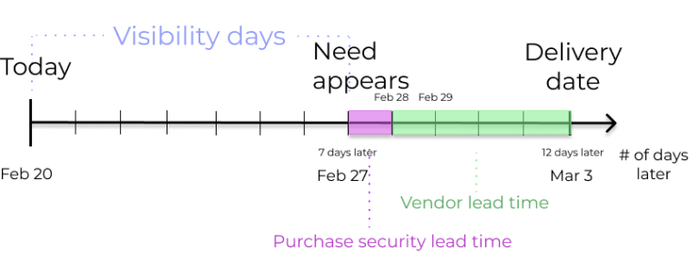
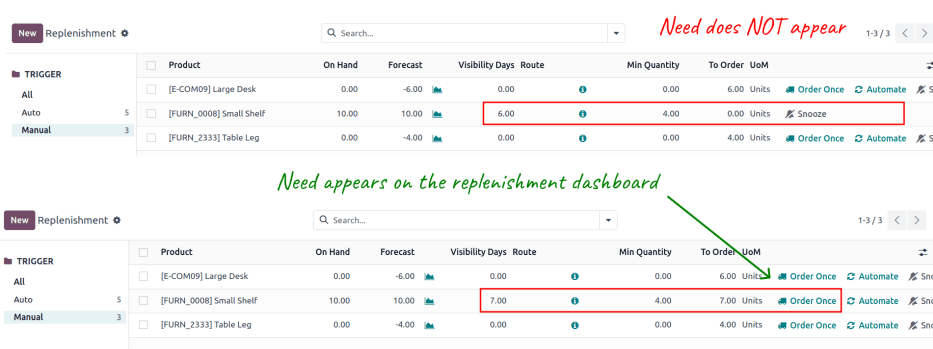
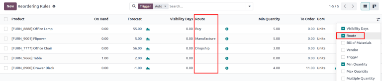

กฎการสั่งซื้อซ้ำ¶
กฎการสั่งซื้อซ้ำ ใช้เพื่อควบคุมระดับสต็อกที่คาดการณ์ไว้ไม่ให้เกินเกณฑ์ที่กำหนด โดยไม่เกินขีดจำกัดสูงสุดที่กำหนดไว้ ซึ่งทำได้โดยระบุปริมาณขั้นต่ำที่สต็อกไม่ควรต่ำกว่า และปริมาณสูงสุดที่สต็อกไม่ควรเกิน
สามารถกำหนดค่ากฎการสั่งซื้อซ้ำสำหรับผลิตภัณฑ์แต่ละชนิดได้ตามเส้นทางที่ใช้ในการเติมสินค้า หากผลิตภัณฑ์ใช้เส้นทาง ซื้อ ระบบจะสร้างคำขอใบเสนอราคา (RFQ) ขึ้นเมื่อกฎการจัดเรียงใหม่ถูกเรียกใช้งาน หากผลิตภัณฑ์ใช้เส้นทาง การผลิต ระบบจะสร้างใบสั่งผลิต (MO) แทน ทั้งนี้ ไม่ว่าเส้นทางการเติมสินค้าที่เลือกจะเป็นอย่างไร
กำหนดค่าผลิตภัณฑ์สำหรับกฎการสั่งซื้อซ้ำ¶
หากต้องการใช้กฎการสั่งซื้อซ้ำสำหรับผลิตภัณฑ์ จะต้องกำหนดค่าผลิตภัณฑ์ให้ถูกต้องก่อน เริ่มต้นโดยไปที่ จากนั้นเลือกผลิตภัณฑ์ที่มีอยู่ หรือสร้างผลิตภัณฑ์ใหม่โดยคลิก สร้าง
ในแบบฟอร์มผลิตภัณฑ์ ภายใต้แท็บ ข้อมูลทั่วไป ตรวจสอบว่า ประเภทผลิตภัณฑ์ ถูกตั้งค่าเป็น ผลิตภัณฑ์ที่จัดเก็บได้ ซึ่งจำเป็นเนื่องจาก Odoo ติดตามเฉพาะปริมาณสต็อกสำหรับผลิตภัณฑ์ที่จัดเก็บได้เท่านั้น และตัวเลขนี้ใช้เพื่อเรียกใช้กฎการสั่งซื้อซ้ำ

ขั้นตอนต่อไป ให้คลิกที่แท็บ สินค้าคงคลัง และเลือกเส้นทางหนึ่งเส้นทางหรือมากกว่านั้นจากส่วน เส้นทาง การทำเช่นนี้จะทำให้ Odoo ทราบว่าต้องใช้เส้นทางใดในการเติมสินค้า
หากมีการจัดเรียงผลิตภัณฑ์ใหม่โดยใช้เส้นทาง ซื้อ โปรดยืนยันว่าได้เปิดใช้งานช่องทำเครื่องหมาย สามารถซื้อได้ ไว้ภายใต้ชื่อผลิตภัณฑ์ ซึ่งจะทำให้แท็บ การจัดซื้อ ปรากฏขึ้น คลิกที่แท็บ การจัดซื้อ และระบุผู้จำหน่ายอย่างน้อยหนึ่งราย และราคาที่จำหน่ายผลิตภัณฑ์ เพื่อให้ Odoo ทราบว่าควรซื้อผลิตภัณฑ์จากบริษัทใด

หากเติมสินค้าโดยใช้เส้นทาง การผลิต สินค้าจะต้องมีรายการวัสดุ (Bill of Materials หรือ BoM) อย่างน้อยหนึ่งรายการ ซึ่งจำเป็นเนื่องจาก Odoo จะสร้างใบสั่งผลิตสำหรับสินค้าที่มี BoM เท่านั้น
หากไม่มี BoM อยู่แล้วสำหรับผลิตภัณฑ์ ให้เลือกปุ่มอัจฉริยะ รายการวัสดุ ที่ด้านบนของแบบฟอร์มผลิตภัณฑ์ จากนั้นคลิก สร้าง เพื่อกำหนดค่า BoM ใหม่

สร้างกฎการสั่งซื้อซ้ำใหม่¶
ในการสร้างกฎการสั่งซื้อซ้ำ ให้ไปที่ จากนั้นคลิก สร้าง และกรอกรายการใหม่ดังต่อไปนี้:
ผลิตภัณฑ์: ผลิตภัณฑ์ที่ได้รับการเติมเต็มโดยการใช้กฎ
ตำแหน่ง: ตำแหน่งที่จัดเก็บผลิตภัณฑ์
ปริมาณขั้นต่ำ: ปริมาณขั้นต่ำที่สามารถคาดการณ์ได้โดยไม่ต้องมีกฎเกณฑ์ เมื่อสต็อกที่คาดการณ์ไว้ลดลงต่ำกว่าจำนวนนี้ คำสั่งเติมสินค้าจะถูกสร้างขึ้นทันที
ปริมาณสูงสุด: ปริมาณสูงสุดที่สามารถเติมสต็อกได้
ปริมาณหลายรายการ: ระบุว่าควรเติมผลิตภัณฑ์เป็นชุดๆ ในแต่ละปริมาณที่กำหนดหรือไม่ (เช่น ผลิตภัณฑ์สามารถเติมเป็นชุด ชุดละ 20 ชิ้น)
UoM: หน่วยวัดที่ใช้ในการสั่งซื้อซ้ำ ค่านี้สามารถเป็น
หน่วยหรือหน่วยวัดเฉพาะสำหรับน้ำหนัก ความยาว ฯลฯ
Tip
นอกจากนี้ ยังสามารถสร้างกฎการสั่งซื้อซ้ำจากแบบฟอร์มผลิตภัณฑ์แต่ละแบบได้ โดยไปที่ และเลือกผลิตภัณฑ์ จากนั้นคลิกปุ่ม กฎการสั่งซื้อซ้ำ อัจฉริยะ แล้วคลิก สร้าง เพื่อกรอกรายการใหม่ตามรายละเอียดด้านบน
สำหรับการใช้งานขั้นสูงของกฎการสั่งซื้อซ้ำ โปรดเรียนรู้เกี่ยวกับฟิลด์ของกฎการสั่งซื้อซ้ำต่อไปนี้:
กฎการสั่งซื้อซ้ำ 0/0/1¶
กฎการสั่งซื้อซ้ำ 0/0/1 เป็นกฎพิเศษที่ใช้เพื่อเติมสินค้าที่ไม่มีอยู่ในคลังทุกครั้งที่มีการยืนยันใบสั่งขาย (SO) สำหรับผลิตภัณฑ์นั้น
Important
กฎการสั่งซื้อซ้ำ 0/0/1 นั้นคล้ายคลึงกับเส้นทาง เติมสินค้าตามคำสั่งซื้อ (MTO) ตรงที่ขั้นตอนการทำงานทั้งสองนี้จะใช้เพื่อเติมสินค้าเมื่อได้รับการยืนยัน SO แล้ว
ความแตกต่างหลักระหว่างสองวิธีนี้คือ เส้นทาง เติมสินค้าตามคำสั่งซื้อ จะสำรองสินค้าไว้สำหรับ SO ที่ทำให้มีการเติมสินค้าโดยอัตโนมัติ ซึ่งหมายความว่าสินค้าดังกล่าว ไม่สามารถ ใช้ได้อีกสำหรับ SO อื่น
กฎการสั่งซื้อซ้ำ 0/0/1 ไม่มีข้อจำกัดนี้ ผลิตภัณฑ์ที่เติมเต็มโดยใช้กฎนี้จะไม่ถูกใช้สำหรับ SO เฉพาะ และสามารถใช้ได้ตามต้องการ
ความแตกต่างที่สำคัญอีกอย่างหนึ่งคือ คำสั่งการเติมสินค้าที่สร้างขึ้นโดยเส้นทาง เติมสินค้าตามคำสั่งซื้อ จะเชื่อมโยงกับ SO ดั้งเดิมด้วยปุ่มอัจฉริยะที่ด้านบนของคำสั่งซื้อ เมื่อใช้กฎการสั่งซื้อซ้ำ 0/0/1 คำสั่งการเติมสินค้าจะถูกสร้างขึ้น แต่จะไม่เชื่อมโยงกับ SO เดิม
See the เติมสินค้าตามคำสั่งซื้อ (MTO) เอกสารประกอบสำหรับภาพรวมเต็มรูปแบบของเส้นทาง MTO
ในการสร้างกฎการสั่งซื้อซ้ำเป็น 0/0/1 ให้ไปที่ แล้วเลือกผลิตภัณฑ์
ที่ด้านบนของหน้าผลิตภัณฑ์ คลิกปุ่มสมาร์ท กฎการสั่งซื้อซ้ำ เพื่อเปิดหน้า กฎการสั่งซื้อซ้ำ สำหรับผลิตภัณฑ์ ในหน้าที่ปรากฏขึ้น ให้คลิก สร้าง เพื่อเริ่มกำหนดค่ากฎการสั่งซื้อซ้ำ
ในฟิลด์ ตำแหน่ง ของกฎการสั่งซื้อซ้ำ ให้เลือกตำแหน่งที่จะจัดเก็บผลิตภัณฑ์ที่เติมใหม่ โดยค่าเริ่มต้น ตำแหน่งนี้จะตั้งเป็น คลังสินค้า/สต็อก
ในฟิลด์ เส้นทาง ให้เลือกเส้นทางที่กฎควรใช้เพื่อเติมสินค้า ตัวอย่างเช่น หากต้องซื้อผลิตภัณฑ์จากผู้ขาย ให้เลือกเส้นทาง ซื้อ
ในฟิลด์ ปริมาณขั้นต่ำ และฟิลด์ ปริมาณสูงสุด ให้ปล่อยให้ค่าเป็น 0.00 ในฟิลด์ เพื่อสั่งซื้อ ให้ป้อนค่า 1.00

โดยการใช้กฎการสั่งซื้อซ้ำที่กำหนดค่าโดยใช้ค่าเหล่านี้ ทุกครั้งที่ SO ทำให้ปริมาณผลิตภัณฑ์ที่คาดการณ์ไว้ลดลงต่ำกว่า ปริมาณขั้นต่ำ เป็น 0.00 ระบบจะใช้ เส้นทาง ที่เลือกเพื่อเติมผลิตภัณฑ์ทีละหน่วย กลับขึ้นไปถึง ปริมาณสูงสุด เป็น 0.00
Example
กรอบรูปได้รับการกำหนดค่าด้วยกฎการสั่งซื้อซ้ำ 0/0/1 ที่ใช้เส้นทาง ซื้อ กรอบรูปจะเก็บไว้เป็นศูนย์หน่วยในเวลาที่กำหนด
ได้รับการยืนยัน SO สำหรับหนึ่งหน่วยของกรอบรูป ซึ่งทำให้ปริมาณที่คาดการณ์ไว้ลดลงเหลือ "-1.00" การดำเนินการนี้จะกระตุ้นกฎการสั่งซื้อซ้ำ ซึ่งจะสร้าง PO สำหรับหนึ่งหน่วยของกรอบรูปโดยอัตโนมัติ
เมื่อได้รับสินค้าจากผู้ขายแล้ว จำนวนกรอบรูปที่คาดการณ์ไว้จะกลับเป็น 0.00 ปัจจุบันมีกรอบรูปหนึ่งอันในมือ แต่ไม่ได้สำรองไว้สำหรับ SO ที่กระตุ้นให้เกิดการซื้อ กรอบรูปนี้สามารถใช้เพื่อเติมเต็ม SO นั้นหรือสำรองไว้สำหรับคำสั่งซื้ออื่น
เปิดใช้งาน¶
เมื่อสต็อกสินค้าลดลงต่ำกว่าขั้นต่ำของกฎการสั่งซื้อซ้ำ ให้ตั้ง ทริกเกอร์ ของกฎการสั่งซื้อซ้ำเป็น อัตโนมัติ เพื่อสร้างใบสั่งซื้อหรือใบผลิตเพื่อเติมสต็อกสินค้าโดยอัตโนมัติ
อีกวิธีหนึ่งคือ การตั้งค่าทริกเกอร์ของกฎการสั่งซื้อซ้ำเป็น ด้วยตนเอง จะแสดงผลิตภัณฑ์และสต็อกที่คาดการณ์ไว้บน แดชบอร์ดการเติมสินค้า โดยที่ผู้จัดการจัดซื้อสามารถตรวจสอบระดับสต็อก ระยะเวลาดำเนินการ และวันที่มาถึงที่คาดการณ์ไว้ได้
See also
Tip
สามารถเข้าถึงแดชบอร์ดการเติมสินค้าได้โดยไปที่
หากต้องการเปิดใช้งานฟิลด์ ทริกเกอร์ ให้ไปที่ จากนั้นคลิกไอคอน (slider) ที่อยู่ทางขวาสุดของชื่อคอลัมน์ และเปิดใช้งานตัวเลือก ทริกเกอร์ จากเมนูแบบเลื่อนลงตัวเลือกเพิ่มเติมที่ปรากฏขึ้น
ในคอลัมน์ ทริกเกอร์ ให้เลือก อัตโนมัติ หรือ กำหนดเอง ดูที่ส่วนต่างๆ ด้านล่างเพื่อเรียนรู้เกี่ยวกับกฎการเรียงลำดับประเภทต่างๆ
ออโต้¶
กฎการสั่งซื้อซ้ำอัตโนมัติที่กำหนดค่าโดยตั้งค่าฟิลด์ ทริกเกอร์ ของกฎการสั่งซื้อซ้ำเป็น อัตโนมัติ จะสร้างใบสั่งซื้อหรือใบผลิตเมื่อ:
ตัวกำหนดตารางเวลาทำงาน และปริมาณ คงเหลือ ต่ำกว่าค่าขั้นต่ำ
ยืนยันคำสั่งซื้อแล้ว และลดปริมาณ คาดการณ์ ของผลิตภัณฑ์ให้ต่ำกว่าค่าขั้นต่ำ
Tip
ตัวกำหนดตารางเวลาถูกตั้งค่าให้ทำงานครั้งเดียวต่อวันตามค่าเริ่มต้น
หากต้องการเรียกใช้กฎการเรียงลำดับใหม่ด้วยตนเองก่อนที่ตัวกำหนดตารางเวลาจะทำงาน โปรดตรวจสอบให้แน่ใจว่าได้เปิดใช้งาน โหมดนักพัฒนา แล้วเลือก จากนั้นคลิกปุ่มสีม่วง เรียกใช้ตัวกำหนดเวลา บนหน้าต่างป๊อปอัปที่ปรากฏขึ้น
โปรดทราบว่าการดำเนินการดังกล่าวจะส่งผลต่อการดำเนินการตามกำหนดเวลาอื่นๆ ด้วย
Example
ผลิตภัณฑ์ โคมไฟสำนักงาน มีกฎการเรียงลำดับใหม่อัตโนมัติที่ตั้งไว้เพื่อเรียกใช้งานเมื่อปริมาณที่คาดการณ์ไว้ต่ำกว่า ปริมาณขั้นต่ำ ของ 5.00 เนื่องจาก คาดการณ์ ปัจจุบันคือ 55.00 กฎการสั่งซื้อซ้ำจึง ไม่ ถูกเรียกใช้งาน

หากเลือกเส้นทาง ซื้อ ระบบจะสร้าง RFQ หากต้องการดูและจัดการ RFQs ให้ไปที่
หากเลือกเส้นทาง การผลิต ระบบจะสร้าง MO หากต้องการดูและจัดการ MO ให้ไปที่
เมื่อไม่ได้เลือกเส้นทาง Odoo จะเลือก เส้นทาง ที่ระบุในแท็บ สินค้าคงคลัง ของแบบฟอร์มผลิตภัณฑ์
ด้วยตัวเอง¶
กฎการสั่งซื้อซ้ำแบบกำหนดเอง ซึ่งกำหนดค่าโดยตั้งค่าฟิลด์ ทริกเกอร์ ของกฎการสั่งซื้อซ้ำเป็น กำหนดเอง จะแสดงรายการผลิตภัณฑ์บนแดชบอร์ดการเติมสินค้าเมื่อปริมาณที่คาดการณ์ไว้ต่ำกว่าขั้นต่ำที่กำหนด ผลิตภัณฑ์บนแดชบอร์ดนี้เรียกว่า ความต้องการ เนื่องจากจำเป็นต้องใช้เพื่อตอบสนองคำสั่งซื้อที่กำลังจะมีขึ้น แต่ปริมาณที่คาดการณ์ไว้ไม่เพียงพอ
แดชบอร์ดการเติมสินค้าซึ่งเข้าถึงได้โดยไปที่ จะพิจารณาวันที่ครบกำหนดของคำสั่งซื้อ ระดับสต็อกที่คาดการณ์ไว้ และระยะเวลาจัดส่งของผู้ขายโดยจะแสดงความต้องการเมื่อถึงเวลาที่ต้องสั่งสินค้าใหม่ เท่านั้น
Note
หากหน้าต่างการสั่งซื้อผลิตภัณฑ์แบบหนึ่งวันสั้นเกินไป ให้ข้ามไปที่ส่วน วันที่มองเห็นได้ เพื่อให้ความต้องการปรากฏบนแดชบอร์ดการเติมสินค้าล่วงหน้าเป็นจำนวนวันที่กำหนด
เมื่อผลิตภัณฑ์ปรากฏบนแดชบอร์ดการเติมสินค้า การคลิกปุ่ม สั่งซื้อครั้งเดียว จะสร้างใบสั่งซื้อหรือใบผลิตพร้อมจำนวนเงินที่ระบุ เพื่อสั่งซื้อ

วันที่มองเห็นได้¶
Important
ตรวจสอบให้แน่ใจว่า ระยะเวลาดำเนินการ เป็นที่เข้าใจก่อนที่จะดำเนินการต่อในส่วนนี้
เมื่อ กฎการสั่งซื้อซ้ำแบบกำหนดเอง ถูกกำหนดให้กับผลิตภัณฑ์ วันที่มองเห็นได้ จะทำให้ผลิตภัณฑ์ปรากฏบนแดชบอร์ดการเติมสินค้า () ล่วงหน้าเป็นจำนวนวันที่กำหนด
Example
ผลิตภัณฑ์มีกฎการสั่งซื้อซ้ำแบบกำหนดเองที่กำหนดให้ทำงานเมื่อระดับสต็อกลดลงต่ำกว่า 4 หน่วย ปริมาณสินค้าคงเหลือปัจจุบันคือ 10 หน่วย
วันที่ปัจจุบันคือวันที่ 20 กุมภาพันธ์ และ วันที่จัดส่ง บนใบสั่งขาย (ในแท็บ ข้อมูลอื่น) คือวันที่ 3 มีนาคม — 12 วันจากวันที่ปัจจุบัน
ระยะเวลาจัดส่งของผู้ขาย คือ 4 วัน และ ระยะเวลาดำเนินการเพื่อความปลอดภัยในการซื้อ คือ 1 วัน
เมื่อฟิลด์ วันที่มองเห็นได้ ของกฎการสั่งซื้อซ้ำถูกตั้งค่าเป็นศูนย์ ผลิตภัณฑ์จะปรากฏบนแดชบอร์ดการเติมสินค้าห้าวันก่อนวันจัดส่ง ซึ่งในกรณีนี้คือวันที่ 27 กุมภาพันธ์
หากต้องการดูผลิตภัณฑ์บนแดชบอร์ดการเติมสินค้าในวันที่ปัจจุบัน คือ 20 กุมภาพันธ์ ให้ตั้งค่า วันที่มองเห็นได้ เป็น 7.00
หากต้องการกำหนดจำนวนวันที่ต้องการดูผลิตภัณฑ์บนแดชบอร์ดการเติมสินค้า ให้ลบ วันที่วันนี้ ออกจาก วันที่ความต้องการปรากฏ บนแดชบอร์ดการเติมสินค้า
Example
อ้างอิงจากตัวอย่างข้างต้น วันที่ปัจจุบันคือวันที่ 20 กุมภาพันธ์ และมีความต้องการผลิตภัณฑ์ในวันที่ 27 กุมภาพันธ์
(27 กุมภาพันธ์ – 20 กุมภาพันธ์ = 7 วัน)
การตั้งค่า วันที่มองเห็นได้ น้อยกว่าเจ็ดวันไม่ถูกต้องในกรณีนี้ ส่งผลให้ความต้องการ ไม่ ปรากฏบนแดชบอร์ดการเติมสินค้า
เส้นทาง¶
Odoo อนุญาตให้เลือกเส้นทางหลายเส้นทางภายใต้แท็บ สินค้าคงคลัง บนแบบฟอร์มผลิตภัณฑ์แต่ละแบบ ตัวอย่างเช่น สามารถเลือกทั้ง ซื้อ และ การผลิต ได้ ซึ่งจะทำให้สามารถใช้เส้นทางทั้งสองเส้นทางได้
Odoo ยังช่วยให้ผู้ใช้สามารถกำหนดเส้นทางที่ต้องการสำหรับกฎการสั่งซื้อซ้ำ นี่คือเส้นทางที่กฎจะตั้งค่าเริ่มต้นไว้ หากมีการเลือกหลายรายการ ในการเลือกเส้นทางที่ต้องการ ให้เริ่มต้นด้วยการนำทางไปที่
ตามค่าเริ่มต้น คอลัมน์ เส้นทาง จะถูกซ่อนอยู่บนหน้า กฎการสั่งซื้อซ้ำ
แสดงคอลัมน์ เส้นทาง โดยเลือกไอคอน (slider) ที่ด้านขวาสุดของชื่อคอลัมน์ และเลือกตัวเลือก เส้นทาง จากเมนูแบบเลื่อนลงที่ปรากฏขึ้น
คลิกภายในคอลัมน์บนแถวของกฎการสั่งซื้อซ้ำ แล้วเมนูแบบเลื่อนลงจะแสดงเส้นทางทั้งหมดที่มีสำหรับกฎนั้น เลือกเส้นทางหนึ่งเส้นทางเพื่อตั้งเป็นเส้นทางที่ต้องการ
Important
หากมีการเปิดใช้งานเส้นทางหลายเส้นทางสำหรับผลิตภัณฑ์แต่ไม่มีการกำหนดเส้นทางที่ต้องการสำหรับกฎการสั่งซื้อซ้ำ ผลิตภัณฑ์จะถูกสั่งซื้อซ้ำโดยใช้เส้นทางที่เลือกซึ่งแสดงเป็นอันดับแรกบนแท็บ สินค้าคงคลัง ของแบบฟอร์มผลิตภัณฑ์